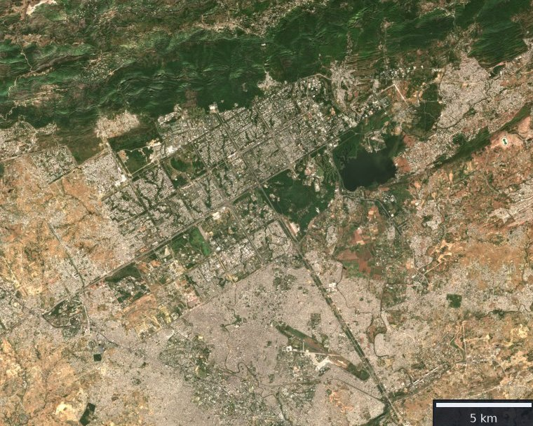
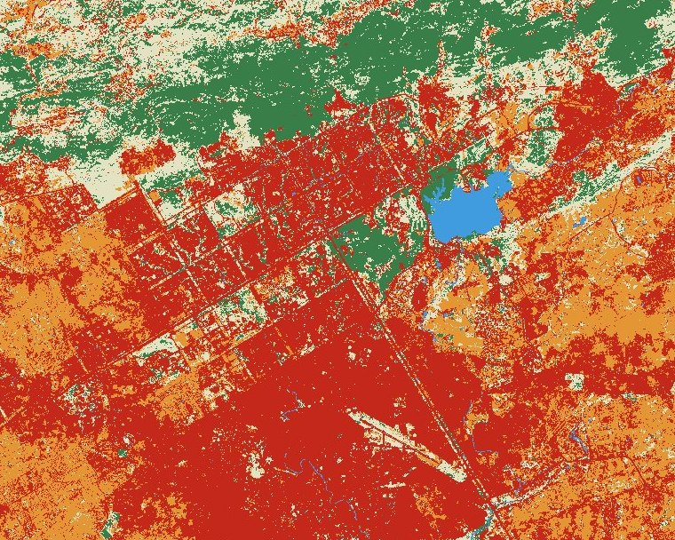

CASE STUDY · GEOAI · MACHINE LEARNING
GeoAI land cover:
Islamabad.
Can a machine-learning model trained on one cloud-free Sentinel-2 scene reproduce a 10 m land-cover map of Islamabad, and how well does it do on areas it has never seen? A Random Forest classifier, tested with spatial block cross-validation.

Question
Islamabad combines planned sectors, the forested Margalla Hills, Rawal Lake and fast-growing peri-urban land. The aim was to build a transparent, reproducible GeoAI baseline: a pixel classifier that learns land cover from Sentinel-2 reflectance, with an honest estimate of how it performs away from its training data.
Data
Imagery: Sentinel-2 L2A, 26 October 2024 (tile 43SCT, 0% cloud), bands B2, B3, B4, B8, B11 and B12 at 10 m. Labels: Impact Observatory 10 m annual land use/land cover for 2024. Both come from Microsoft Planetary Computer. The study area is 640.8 km² (72.92–73.22°E, 33.58–33.78°N).


Sentinel-2Random ForestDrag to compare the Sentinel-2 input with the Random Forest prediction. Blue: water, green: trees, orange: crops, red: built area, cream: rangeland.
Method
1. Features. Six reflectance bands (after removing the +1000 offset that processing baseline 05.11 adds) plus NDVI, NDBI, MNDWI and a 5×5 NDVI texture layer: 10 features per pixel.
2. Spatial split. The scene is cut into 1 km blocks and 30% of blocks are held out for testing. Neighbouring pixels are strongly correlated, so a random pixel split would overstate accuracy.
3. Training. Up to 5,000 pixels per class from the training blocks (25,000 in total), Random Forest with 300 trees (scikit-learn).
4. Evaluation. 300,000 pixels from the held-out blocks: overall accuracy, Cohen's kappa, per-class F1, producer's and user's accuracy.
Results
- Overall accuracy
- 71.7%
- Kappa
- 0.57
- Macro F1
- 0.68
- Built area F1
- 0.82
Built area (F1 0.82), trees (0.76) and water (0.77) are separated well. Most errors fall between crops and rangeland (F1 0.57 and 0.48), which look alike in a late-October scene after harvest. The model also finds more cropland (20.7% vs 12.5%) and less built area (45.7% vs 58.7%) than the reference. The reference map labels whole sectors as built area, while the 10 m classifier picks up the green belts, parks and fields between buildings. SWIR bands and MNDWI were the most important features.

Limitations and next steps
The labels are themselves a modelled product, so these scores measure agreement with Impact Observatory, not ground truth. Next steps: field-checked or hand-digitised validation points, a multi-season image stack to separate crops from rangeland, and a deep-learning (U-Net) comparison.